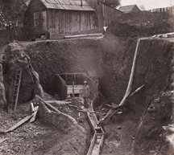

There was once an alley that extended along side of the Ferguson Building (current Brady Building). That alley was where Charles Bassett opened the first store in Columbia. "The first to locate at the north of the gulch." Most likely a log house. (Barbara Eastman - 1971)
Charlie was supposed to have been a sailor on board the Oregon which was a Pacific Mail Steam Ship that landed in San Francisco on April 1, 1849.
1850 May 1 - Charles Bassett set up a saloon and a supply store, on Bassett Alley/Lane.
1850 August 17 - Established a milk ranch in Columbia long before this date, peddling to miners and gamblers, from his store.
1850 September 1 - Domingo Argate of Sonora sold Bassett certain goods for $600.
1850 Fernando Arano recovered judgement against Bassett for $72.25.
1850 Witnesses speak repeatedly of his corral. (See image above)
1850 December 2 - Bought materials for restaurant and a dairy house. Next north of Jackson & Stone's Pioneer Store and moved to the location. (Barbara Eastman - 1971)
1851 September - Joseph Carley held his first Justice Court in this store, to Spring 1852. After which he bought his own house.
1853 February - Bassett sold this lot to Charles J. Brown, agent for Adams & Co. purchased lot of Brown remained as their agent, but moved his bookstore to State & Main Streets.
1854 July 10 - "A fire broke out this morning, about 2 o'clock, on Broadway, two doors from Clark's Hotel, in the town of Columbia, and resulted in the almost total destruction of the town. All the property within the territory bounded by Broadway, Fulton, State and Washington streets, is entirely consumed, except the fire-proof building of Donald & Parson." - Sonora newspaper.
1854 After the great fire Bassett was up and running a saloon and gambing tent in the still smoldering ashes.
1855 July - Andrea Bode acquired lot in a judgement against Adams & Co. and leased it to Ganze & Auer, who purchased property from him in April 1857, and open a bakery.
1859 August - Ganze & Auer sell their Columbia Bakery to George Reusmann & Louis Dorgelch.
1860 July - Further action against Adams & Co., Sheriff sells to Lewis Shearer.
1863 Reusmann & Dorgelch assessed for premises and may have rented from Shearer.
1864 Antone Siebert rented the store.
1866 The land is mined.
1871 August - Called Cook's Alley. With Cook owning Block 1, Lot 55 - Deputy County Surveyor map by John P. Dart

Today all that is left of the "Alley" is limestone rock columns.
This page is created for the benefit of the public by